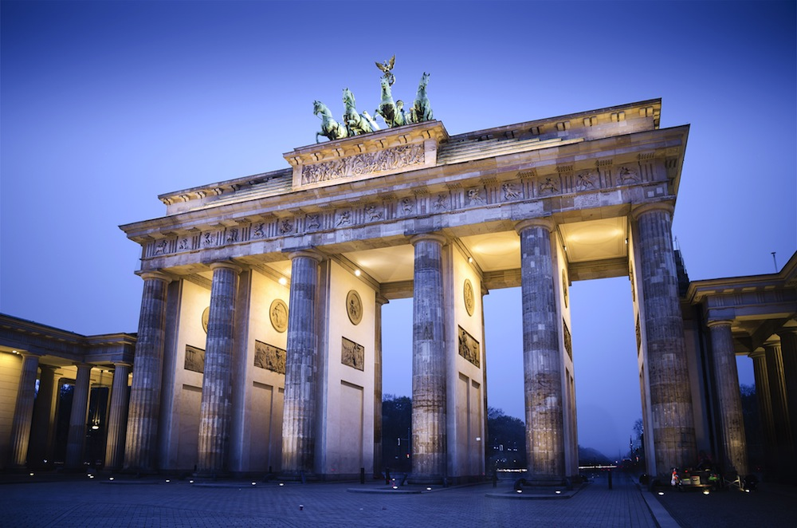
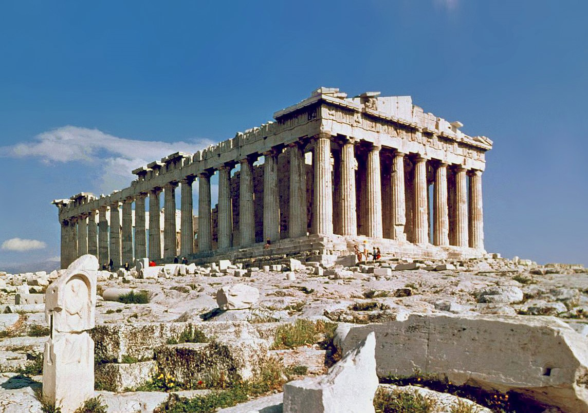
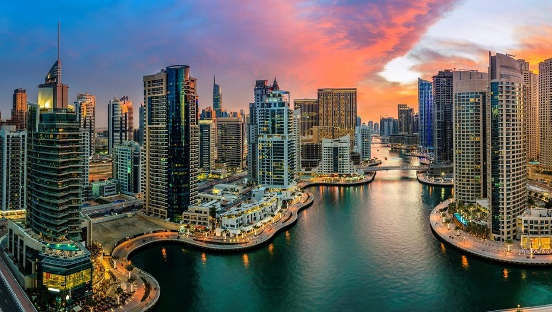
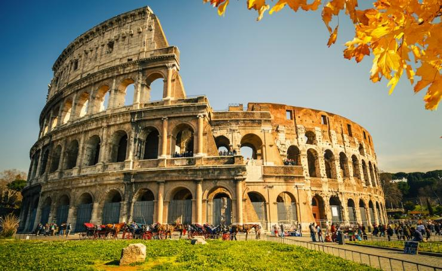
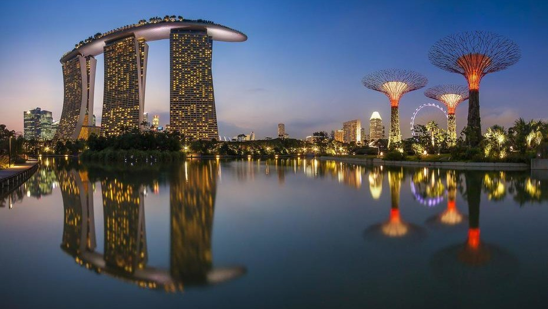

Vista parcial de la pista de deslizamiento de Whistler. Whistler es una estación ubicada entre los 50 grados de latitud, 122 grados de longitud aproximadamente a dos horas por carretera al norte de la ciudad de Vancouver en Columbia Británica, Canadá. Es considerado el resort para esquí más grande de Norteamérica, y la mejor estación alpina de Norteamérica según la revista Ski Magazine. Se compone de dos montañas Whistler y Blackcomb unidas en el centro por una villa diseñada para peatones. Sumando ambas montañas tiene más de 200 pistas de esquí de varias dificultades, 5 snowparks y 3 pipes, 3,300 hectáreas transitables, un promedio de 10 metros de nieve por año. Cuenta con 38 teleféricos permitiendo el acceso hasta una altura de 1609 metros sobre el nivel del mar. Debido al gran número de teleféricos tiene capacidad para albergar 61,407 esquiadores por hora.
La población estable en la villa de Whistler es de aproximadamente 14,000 habitantes. Más de dos millones de personas visitan Whistler anualmente, principalmente por sus estaciones de esquí alpino y su terreno apto para el mountain bike. Whistler está localizado sobre la autopista 99, aproximadamente a 44 kilómetros al norte de Squamish. El pueblo ha recibido numerosos premios de diseño y ha sido votado entre los mejores destinos en Norteamérica por importantes revistas de esquí durante los últimos quince años.

Whistler hermoso, maravilloso, cálido y perfecto! una pequeña "aldea" donde la gente vo para el esquí. Allí podrá encontrar una gran pista de esquí .... y un gran lugar para pasear un sábado o un domingo. Si no te gusta esquiar, l tiene varios bares, tiendas y restaurantes para ver y experimentar. Un paseo en la góndola no se puede perder incluso con un miedo a las alturas! La hermosa ciudad y vale la pena ir en invierno.